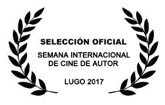
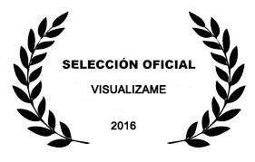
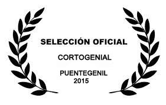
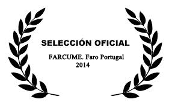
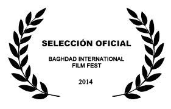
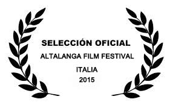
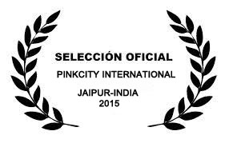

DOCUMENTALES: |
GRADOS DE LIBERTAD: Un documental Responsable, Veraz y sin Miedo. Nuestro largo Documental muestra la solidaridad de los Voluntarios con los Privados de Libertad. El poder de la Solidaridad.
Full HD 1h 38'. Año 2017
|
 |
Selección Oficial Festival de Cine Ciudadano Comprometido. ACICOM. Valencia 2017. |
|  |
Selección Oficial Semana Internacional de Cine de Autor. Lugo 2017. |
| |
|
TÚ PODRÍAS SER YO: nuevo corto documental. Hablamos de gente que hace EL BIEN, después de haber sido testigo DEL MAL. Debemos tener empatía, y no rechazar a los marginados.
Full HD 29'11". Año 2015
|
 |
Selección Oficial Festival Internacional de Documentales Ierapetra Awards. Creta 2016. |
 |
Selección Oficial Festival FIBABC. Madrid. 2016. |
|
Selección Oficial Festival Internacional de Cinema Solidari. Ko & Digital. Sant Sadurny d´Noia. 2016 |
 |
Selección Oficial Festival Visualizame. 2016. |
| |
| VIDAS SOLIDARIAS ALREDEDOR DEL MUNDO: |
HMONGTOPYA: Este documental nos muestra la Utopya de una minoría étnica, los Hmong. Se encuentran al Norte de Vietnam, Laos y Tailandia, pero no entienden de fronteras burocráticas.
Full HD 25'10". Año 2015 Subtítulos en Español. |
 |
Selección Oficial Festival Picurt. 2015. |
| |
INOLVIDABLES VIUDAS: Si vivir va unido a la muerte, para las mujeres indias enviudar es como morir dos veces.
Full HD 21'41". Año 2014 Subtítulos en Español\Inglés. |
 |
Selección Oficial FIBABC . Madrid. 2014. |
 |
Sección Oficial. Festival Documentales Etnográficos Sobrarbe-Espiello. 2015. |
 |
Sección Oficial. Festival Visualizame. Madrid. 2015. |
 |
Sección Oficial. Festival Septiembre. Mazatlán. Méjico. 2015. |
 |
Sección Oficial. Festival Internacional. Cine Invisible. Film Sozialak. Bilbao.2015. |
 |
Sección Oficial. Festival Internacional de cine de Ponferrada. 2015 |
 |
Sección Oficial. Woman Arts and Film Festival. Sidney. Australia. 2015 |
 |
Sección Oficial. 7ª Muestra Festival Internacional Cine en Femenino. Bogota. Colombia. 2015 |
|  |
Sección Oficial. CortoGenial. PuenteGenil.2015 |
 |
Sección Oficial. Premis Miquel Fabregues. 2016 |
 |
Sección Oficial. 13ª Ethno Internacional Film Festival: The Heart of Slavonia. 2016 |
 |
Sección Oficial. Festival Cine Mistica. 2016 |
SARI ROSA: A la discriminación de la mujer en india le ha salido una salvadora que viste de Rosa, de Sari Rosa.
Full HD 17'44". Año 2013. Subtítulos en Español\Inglés.
 |
Primer Premio Cortos en Femenino 2014. |
|  |
Sección Oficial. FARCUME. Faro.Portugal. 2014. |
 |
Sección Oficial. Autumn Short Film Festival. Somerset. Kentucky. USA. 2014.
|
|
Sección Oficial. Festival Visualizame. Madrid. 2014. |

|
Sección Oficial. 6º Festival Internacional. Cine Invisible. Film Sozialak. Bilbao.2014. |
 |
Sección Oficial. Festival Cinewest. Sidney. Australia. 2014. |
|  |
Sección Oficial. Festival Internacional Film Fest. Baghdad. 2014. |

|
Sección Oficial. Muestra Cine. Mujer en Escena. Málaga. 2014. |
 |
Sección Oficial. Film Festival Ponferrada. 2014. |
 |
Sección Oficial. Fenaco. Cusco- Perú 2014. |
 |
Sección Oficial. Quartmetratges. 2014. |
|
Sección Oficial. Festival Internacional Film Fest. Baghdad. 2014. |
 |
Premio Mejor Documental. Festival Corto Helvético Al Femminile. Suiza 2015. |
 |
Seleccionado en el Festival Internacional de Cine Social y Concordia. Argentina 2015 |
 |
Mención Especial en el Festival Internacional Tenemos Que Ver. Uruguay 2015 |
 |
Sección Oficial. Festival Audiovisual Porque Te Quiero Te Apoyo. Bogotá-Colombia. |
|
WATOTO TUNZA: La valentía y humanidad de una Mujer Keniata por dar una oportunidad a niños abandonados en el suburbio de Kibera en Nairobi.
Full HD 13'3". Año 2013. Subtítulos en Español\Inglés.
 |
Finalista Festival Elche 2013. |
 |
Ganador mejor documental Festival Cine Quartmetratges 2013
|
 |
Seleccionado en el VIII Festival Internacional Voces Contra el Silencio. México 2014 |
 |
Finalista Festival Internacional Tenemos Que Ver. Montevideo. Uruguay 2014 |
 |
Selección Oficial. Festival Internacional de Cinema Solidari. Ko & Digital. 2014.
|
 |
Selección Oficial. Festival Internacional de Cine para niños y adolescentes: Ojo de Pescado. Chile. 2015.
|
|
UN SALTO INESPERADO: Las volteretas y acrobacias se han convertido, gracias a dos jóvenes Keniatas, en la forma más divertida e inesperada de alejar a los chavales del suburbio de Kayole (Nairobi) de los peligros de la calle.
Full HD 5'4". Año 2013. Subtítulos en Español\Inglés.
 |
Seleccionado en el XIV Festival Internacional de Cortometrajes Radio City 2014.. |
 |
Seleccionado en el Festival Internacional de Arusha. Tanzania. 2014. |
|
| VIDAS ROTAS?: Este documental nos muestra la dureza y la valentía que viven las víctimas de minas antipersona en Camboya. Su esfuerzo y superación son la esperanza ante el infortunio de las armas. Sus cuerpos han sufrido amputaciones, pero sus vidas no están rotas.
Full HD 16'30". Año 2014. Subtítulos en Español\Inglés. |
 |
Seleccionado en la Muestra Audiovisual: La Imagen De La Memoria. Medellín Colombia. 2015 |
|  |
Seleccionado en el Altalanga Film Festival. Italia. 2015 |
|
Sección Oficial. Festival Internacional. Cine Invisible. Film Sozialak. Bilbao.2015. |
 |
Selección Oficial: Autors En Curt. SGAE. 2015. |
 |
Sección Oficial. FARCUME. Faro.Portugal. 2015. |
|
Sección Oficial. Festival Internacional de Cine de Ponferrada. 2015 |
 |
Sección Oficial. FIC. Argentina. 2015 |
 |
Sección Oficial Festival Internacional de Cinema Solidari KO & Digital. Sant Sadurny d´Noia. 2015 |
|  |
Sección Oficial. PinkCity International Short Film Festival Jaipur. India. 2015 |
 |
Selección Oficial. Fudación Anade. Festival Cine Y Discapacidad. 2015 |
|
Selección Oficial. Festival de Ojo. Ecuador. 2016 |
 |
Selección Oficial. Festival Internacional de Kashmir. 2017 |
| |
| ADOPCION LA ULTIMA OPCION: En Etiopía, país de adopción por excelencia, las madres solteras sin recursos se unen para luchar y vivir junto a sus bebes, y así tener un futuro sin tener que recurrir a darlos en adopción.
Full HD 9'50". Año 2013. Subtítulos en Español\Inglés.
|
OTROS DOCUMENTALES: |
| DONDE NACE EL AMAZONAS: Documental en donde las personas que habitan este rio nos muestran como este gran caudal de agua les condiciona su manera de vivir. Primer Festival Mujer y Cine. (Valencia). Festival Rios. (Portugal). Embajada de España en Perú. Voces contra el Silencio. Institutos Cervantes: Boston, NY, Chicago.
Full HD. 48'. Pal. Año: 2011. Subtitulado Inglés. |
|
Selección Oficial. Festival Sembrando Cine. Festival de Medio Ambiente. Perú. 2017 |
| |
ENTRE FAROS: Documental que nos muestra através de estas construcciones, los faros, su entorno, su gente, y su idiosincrasia. Emitido.en.TMV.y.LevanteTV.
DV Pal. 35'. Año:2010.. |
VIE-IRAS: El camino de Santiago en los pies de los propios peregrinos. Seleccionado XXX Festival Mostra Cinema del Mediterrani 2009. Primer premio: Festival "Un puente entre culturas" Ratisbona (Alemania).Junio de 2012. Centro Trekking Bolonia,Italia.
Suffolk University Boston, Usa.
DV Pal. 30'. Año:2009..Subtitulado Inglés. |
EL CANTE EN LEVANTE: La vida de un cantaor de flamenco con alma. Seleccionado Premios Tirant.
DV Pal. 12'. Año:2007.
|
VIDEOS PROMOCIONALES: |
VINOSTRUM: Documental promocional de los Vinos de la Comunidad Valenciana.
|
EMBARCADERO CAÑAS Y BARRO: Un viaje a la Albufera de Valencia. |